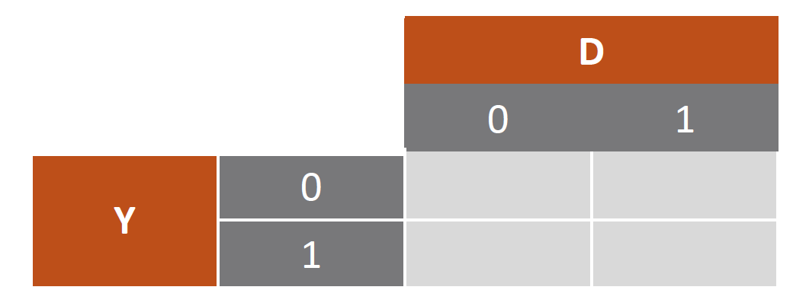
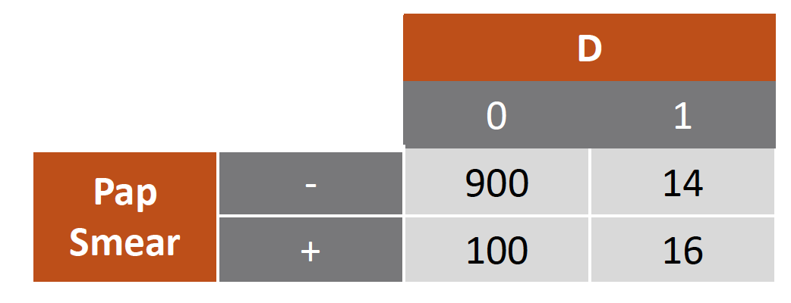
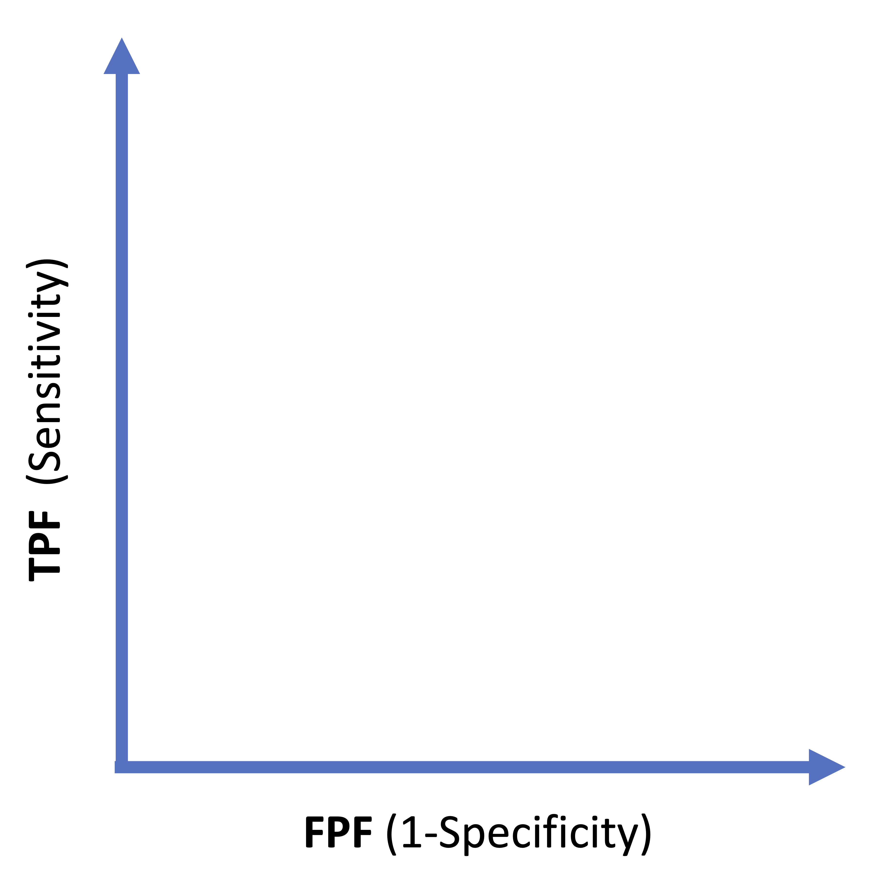
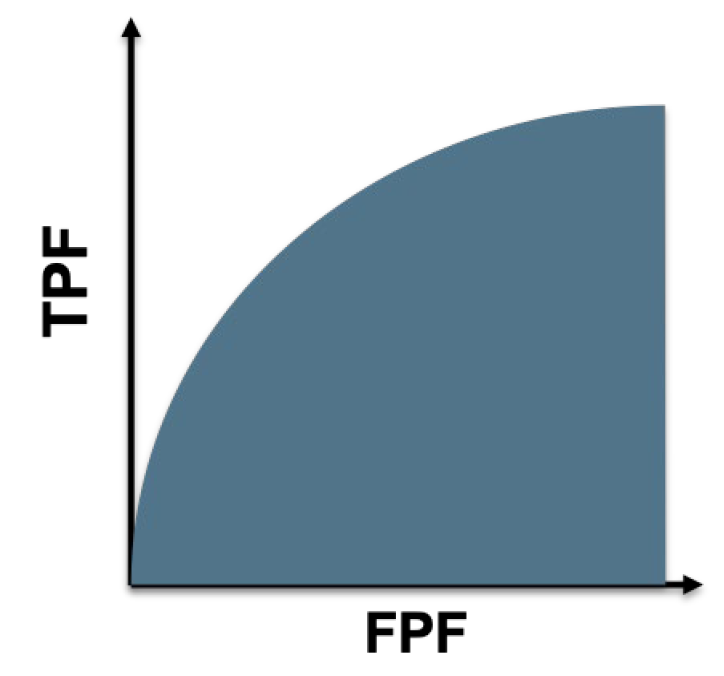
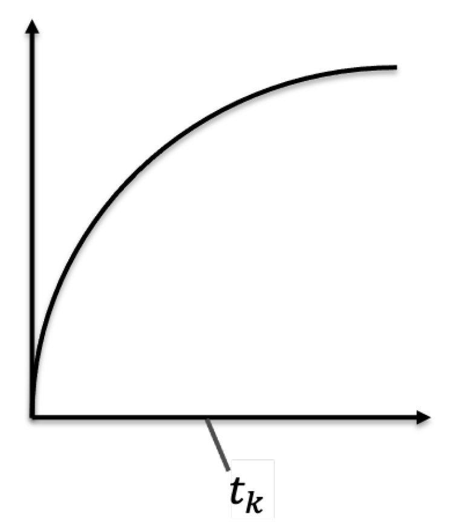

Fundamentals of
Data Analytics and
Predictions
ROC
Xi (Rossi) LUO
Department of Biostatistics and Data Science
School of Public Health
The University of Texas Health Science Center at Houston
TP, TN, FP, FN
- TP: predicted positive (1) and indeed true positive (1)
- TN: predicted negative (0) and indeed true negative (0)
- FP: predicted positive but actually true negative
- FN: predicted negative but actually true positive
ROC-Receiver Operator Characteristic Analysis
- The statistical evaluation of medical tests for Classification & Prediction
- $D$ = outcome (disease) or true outcome
- $Y$ = test result (can be output from classifier) or prediction
- TPF = true positive fraction = TP/P = TP /(TP + FN)
- FPF = false positive fraction = FP/N = FP / (FP + TN)
- FNF = false negative fraction = FN/P = 1 - TPF
- TNF = true negative fraction = TN/N = 1 - FPF
- aka: TPR, FPR, FNR, TNR, R=rate

Sensitivity and Specificity Example
- Let $D = 1$ if patient has a positive biopsy.
- Sensitivity = 16/30 = 53%
- Specificity = 900/1000 = 90%

ROC Curve
- Let Y be a continuous test where larger Y more indicative of disease
- $P(D=1\mid Y)$ increasing in $Y$
- Looks at (specificity, sensitivity) pairs for all thresholds on $Y$ where + test is $Y \ge C$
- TPF(c) = $P(Y \ge C\mid D=1)$
- FPF(c) = $P(Y \ge C\mid D=0)$
- ROC(c) = $\{$(FPF(c), TPF(c)); $c \in (-\infty, \infty)\}$
ROC Demo
- Puts different biomarkers on a common relevant scale
- Invariant to monotone increasing transformations of $Y$
- Shown entire range of possible performance

Summary Statistics of ROC Curves
- AUC
- ROC (t) at a t of interest (FPF)
- Partial AUC
Area Under The ROC Curve
$AUC=\int_{0}^{1} ROC(t)dt=average(TPF)$
- Ideal: $AUC=$
- Useless: $AUC=$
- $AUC=P(Y_D \ge Y_{\bar D})$
$=P$(correct ordering for random case and control pair), where $Y_D=Y$ of cases,$Y_{\bar D} =Y$ of
controls
Wilcoxon-type concordance probability can calculate confidence interval using Somers' $D_{xy}$ Rank
correlation

ROC(t) at a t of Interest
- (also could be specificity at a sensitivity of interest)
$var(\widehat {ROC}_e(t))=\frac{ROC(t)\{1-ROC(t)\}}{n_D}+(ROC'(t))^2 \frac{t(1-t)}{n_{\bar D}}$
C.I. for ROC(t)
- 1. $\widehat {ROC}_e(t) \pm z_{\frac{\alpha}{2}} \sqrt{\widehat {var}}$
- 2. Use Bootstrap
- Resample with replacement $n_D$ cases and $n_{\bar D}$ controls
- Calculate $\widehat {ROC}(t)$ for new data
- Repeat $B$ times $\{ \widehat {ROC}^1(t), \dots, \widehat {ROC}^B(t) \}$
- C.I. are the $\frac{\alpha}{2}$ and $1-\frac{\alpha}{2}$ quantiles
Note: if several observations come from the same unit (e.g. patient), cluster by that unit (sample patient,
not observation)
$\rho AUC$
$\rho AUC(a,b)=\int_{a}^{b} ROC(f)df$
- $\frac{\rho AUC}{t}=$ TPF averaged over FPF$\in (a,b)$, where $(a,b)$ is a clinically relevant range of
FPFs
- Compromise between $AUC$ & $ROC(t)$
- Can use bootstrap to compute confidence intervals
Comparison of ROC Summary Statistics
- AUC is widely used, but not clinically relevant and hard to show an increase in AUC for another test
- $ROC(t)$ is very interpretable, but does not use all of ROC curve data
- $\rho AUC$ is a compromise
Binormal ROC curve
- Fit a binormal distribution to the ROC curve
$Y_{\bar D} \sim N(\mu_{\bar D}, \sigma_{\bar D}^2), Y_D \sim N(\mu_D, \sigma_D^2)$
$ROC(t)=\Phi (a+b\Phi^{-1}(t))$
where $a=\frac{(\mu_D-\mu_{\bar D})}{\sigma_D}$, $b=\frac{\sigma_{\bar D}}{\sigma_D}$
Binormal assumption:
$g(Y_{\bar D}) \sim $ Normal
$g(Y_D) \sim $ Normal for some transformation $g$
Area Under The ROC Curve

- $t_k$: 1-specificity
- $y_k$: threshold
- $ROC(t_k)=\Phi (a+b\Phi^{-1}(t_k))$
- Can fit with probit regression with response $U_k=I(Y>y_k)$ and covariate $\Phi ^{-1} (t_k)$
Binormal vs. Empirical ROC Curve
- Binormal is smooth, statistically more efficient, but depends on (weak) assumptions
- If marker is ordinal $\rightarrow$ binormal
- To compute sample for a study $\rightarrow$ binormal
- ROC regression analysis (w/covariates) $\rightarrow$ binormal
- ROC curve for continuous data $\rightarrow$ empirical
Software for ROC Analyses